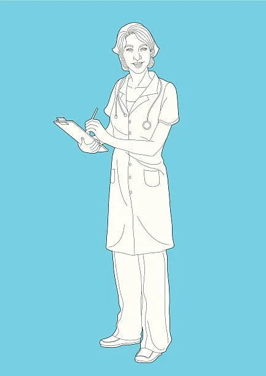
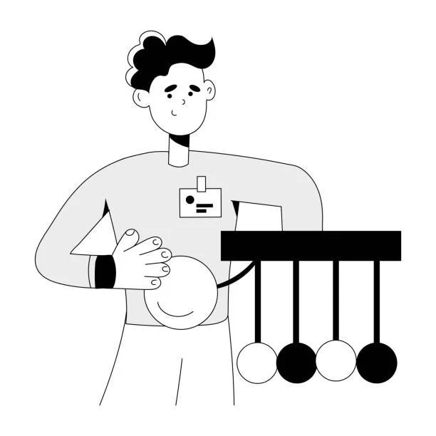
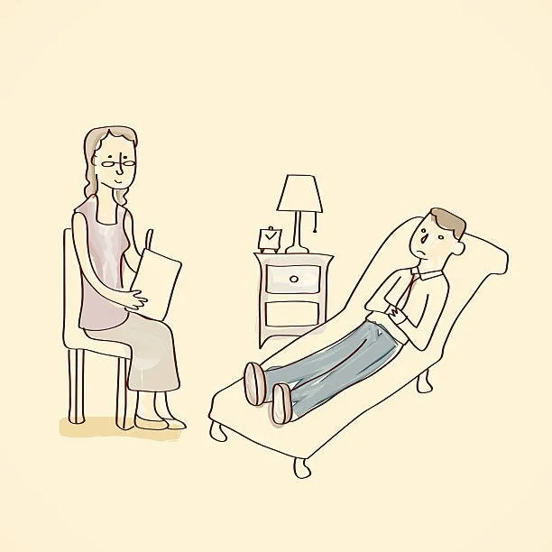
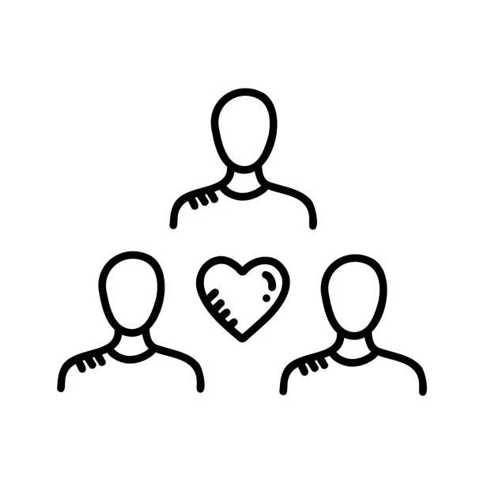

Find the team that best suits your needs.
Our team

Registered Nurses
Our Registered Nurses form the backbone of our healthcare team at Vigil, contributing to the high standard of care provided in our services. These skilled professionals bring their expertise in general nursing and mental health nursing care to support individuals transitioning from mental health units to community settings. The nurses at Vigil are responsible for monitoring and managing physical and mental health needs, administering medications, and providing essential nursing interventions. Working collaboratively with other healthcare professionals, our nurses ensure a seamless and coordinated approach to patient care. Their commitment to holistic well-being makes our nurses integral contributors to the success of our mental health services.

Social Workers
Social Workers bring a unique skill set focused on addressing the social determinants of mental health, advocating for patients, and enhancing their overall quality of life. Responsibilities include conducting comprehensive psychosocial assessments, collaborating with patients and families to develop holistic care plans, and connecting individuals with community resources and support networks. Social Workers at Vigil are compassionate advocates who navigate the complexities of social dynamics, ensuring that patients receive the comprehensive care needed for a successful transition from hospital to home.

Occupational Therapists
Occupational Therapists collaborate closely with patients to develop personalized care plans, incorporating therapeutic interventions to improve skills for activities of daily living (ADLs) and instrumental activities of daily living (IADLs). Whether it's building essential life skills, aiding in the development of coping mechanisms, or facilitating community reintegration, OTs at Vigil are dedicated to empowering individuals on their journey toward mental health and overall well-being.

Healthcare Workers
Healthcare workers play a pivotal role in facilitating the transition of individuals from hospital care to home, ensuring a smooth and personalized path to recovery. They conduct thorough assessments, develop tailored transition plans, and provide education and support to patients and their families. Monitoring progress post-discharge, intervening in crises, and advocating for patients' needs are integral aspects of their role. They collaborate with various stakeholders, maintain detailed documentation, and uphold regulatory standards to ensure continuity of care and promote patients' well-being throughout the transition process.